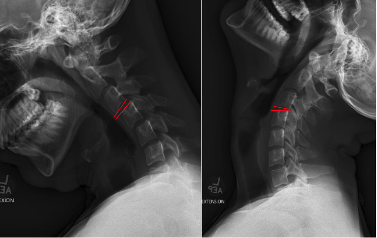

1) Description of Measurement
Cervical angulation, also referred to as segmental rotation, measures the change in angular alignment between two adjacent vertebrae when the neck moves from full flexion to full extension.
This dynamic parameter assesses ligamentous integrity, facet stability, and functional motion in the subaxial cervical spine (C2–C7). Excessive angulation reflects segmental instability, commonly arising from trauma, degenerative disc disease, facet insufficiency, or postoperative complications.
The measurement focuses on the angular difference between vertebral endplates at each functional motion segment.
2) Instructions to Measure
3) Normal vs. Pathologic Ranges
Key Criterion (White & Panjabi):
Segmental angulation > 11° between flexion and extension is considered cervical instability.
4) Important References
White AA, Panjabi MM. Clinical Biomechanics of the Spine. 2nd ed. Lippincott Williams & Wilkins; 1990.
Swartz EE, Floyd RT, Cendoma M. Cervical spine functional anatomy and the biomechanics of injury due to compressive loading. J Athl Train. 2005 Jul-Sep;40(3):155-61.
Harris JH Jr, Edeiken-Monroe B. The Radiology of Emergency Medicine. Williams & Wilkins; 1993.
Daffner RH, Deeb ZL, Rothfus WE. The posterior vertebral body line: importance in the detection of burst fractures. AJR Am J Roentgenol. 1987 Jan;148(1):93-6. doi: 10.2214/ajr.148.1.93.
5) Other info....
Angulation measurement complements C2–C7 translation, providing both rotational and translational assessments of stability.
Excess angulation typically indicates compromise of:
Flexion–extension views must not be performed until fracture or dislocation is excluded via CT.
Dynamic instability often becomes apparent only in flexion–extension films, even when neutral films appear stable.
Segmental angulation is especially useful in:
Use calibrated PACS tools to improve accuracy and minimize parallax errors.